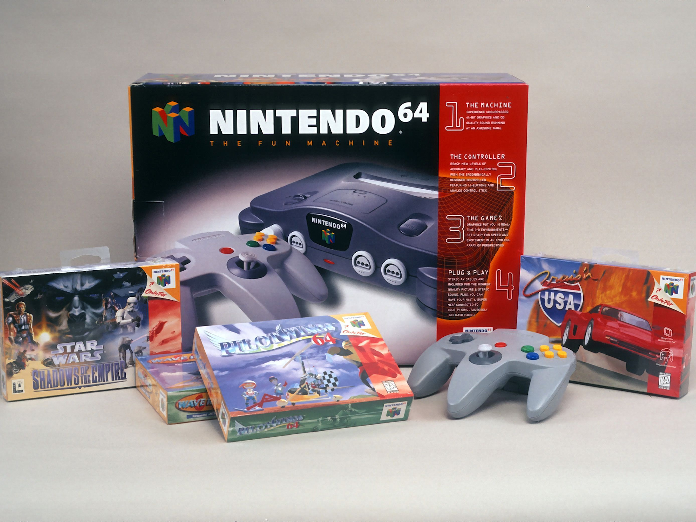
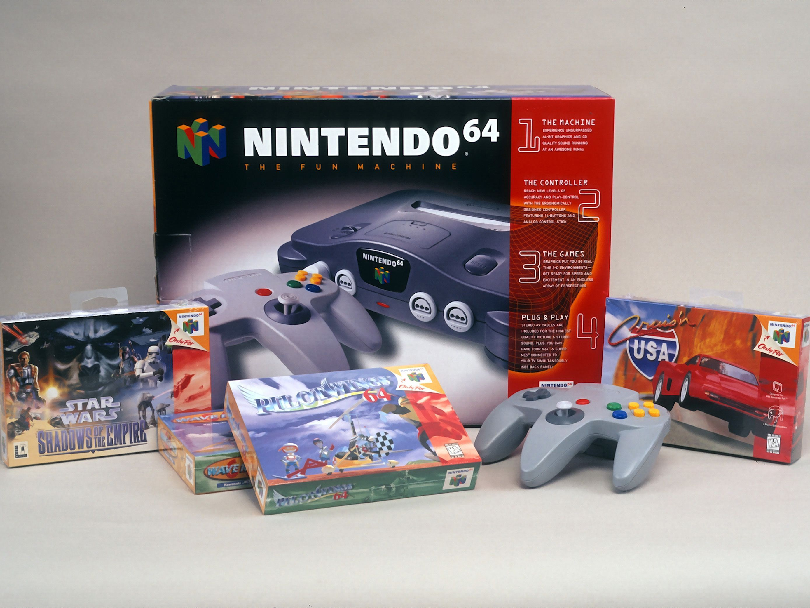

Nintendo 64
lanzada en 1996, fue la tercera consola de sobremesa de Nintendo, revolucionando la industria con gráficos 3D avanzados gracias a su procesador de 64 bits, su icónico mando con stick analógico para una navegación precisa, y un potente multijugador local, convirtiéndose en el hogar de títulos legendarios como Super Mario 64, The Legend of Zelda: Ocarina of Time y GoldenEye 007, que sentaron bases para el diseño moderno de videojuegos, aunque su uso de cartuchos limitó la capacidad frente a la competencia de CDs. A diferencia de sus competidoras que adoptaron el formato CD, Nintendo optó por mantener el uso de cartuchos, lo que permitía tiempos de carga casi instantáneos, aunque con menor capacidad de almacenamiento. Su mando fue revolucionario al introducir el primer stick analógico moderno, diseñado específicamente para navegar por mundos en 3D, además de la función de vibración mediante el accesorio Rumble Pak.
 

>>>>mas informacion<<<